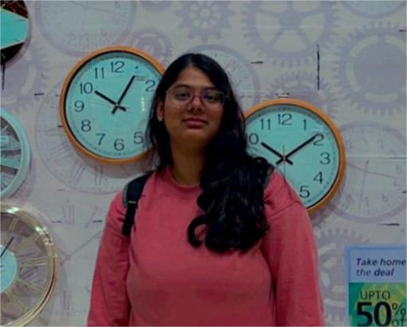

Meghana Bikki
I'm up for the chance to put the skills I have to work to enhance them.
✉ bikki.meg@gmail.com
📞(+91) 8618846164
Skills
C-Language [Beginner Level]
Written & Spoken Communication
Rapport Building
Team Management
Adaptable & Flexible
Work Experience
SDP Trainee | GITAM DEEMED TO BE UNIVERSITY BLR | 15th May to 28th June
Summer Development Program 2024 was a 6-week program that was divided into 3 sprints, It is an internship program initiated by GITAM EECE Department to remove the gap between academia and industrial skills. This helped me accquire new skills and sharpen the pre-accquired skills.
- Sprint One: Included teaching us industry specific skills like resume writing, LinkedIn profile optimisation, Git & Github, PCB and Agile Methodology.
- Sprint Two: It was for domain specific project, my domain was VLSI & Comm. we understood how communication and VLSI are interconnected, understood different tools in VLSI and worked on the project with help of FPGA.
- Sprint Three: This was additional time given to complete all the assigned tasks, reports and work on industry specific skills.
Workshops Attended
➤ CMOS DIGITAL IC DESIGN WORKSHOP
- Ms. Neha Maheshwari from IIT Indore was the resource person for this workshop.
- Provided introduction to VLSI frontend and backend processes, helped us get familiar with CADENCE VIRTUOSO TOOL.
- Designed and simulated NMOS Invertor and CMOS invertor in cadence, observed the characteristics using plots.
➤ PCB WORKSHOP
- Dr. Arvind Kumar & Dr. Girish Shankar Mishra were the trainers for this workshop.
- Started with the basics of PCB, Circuit Designing, Tinkercad & Easyeda.
- Designed few circuits first in Tinkercad then implemented it in Easyeda and then exported it as Gerber files.
➤ WORKSHOP ON AGILE METHODOLOGY
- Anurag Kumar & Priyadarshini Kabaka were the trainers for this workshop.
- Started with an ice-breaker which was made to make us familiar with our fellow attendees which then continued with few interactive games that were directly linked with theoretical concepts.
- Learnt about agile methodology to complete a project, time evaluation, sprint meetings, kanban etc.